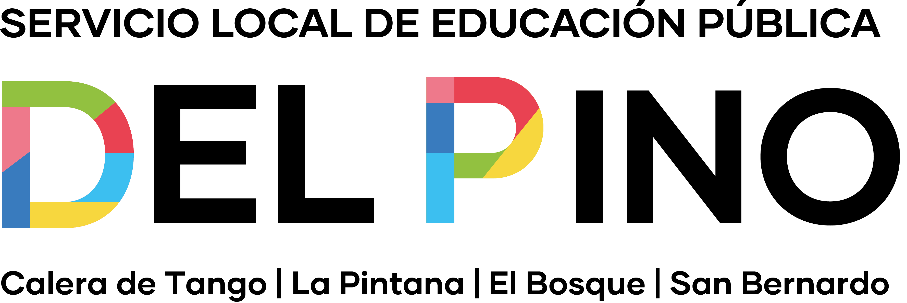

Cargando datos…

Es la prueba nacional de la Agencia de Calidad de la Educación. El puntaje promedio de un establecimiento va aproximadamente entre 150 y 360 puntos.
Muestran qué porcentaje de estudiantes logró lo exigido por el currículum: Adecuado (satisfactoriamente), Elemental (de manera parcial) o Insuficiente (aún no demuestra los conocimientos más elementales).
Indicadores de Desarrollo Personal y Social (0 a 100): autoestima y motivación, clima de convivencia, participación y formación ciudadana, y hábitos de vida saludable. Se miden con cuestionarios a estudiantes, docentes y familias.
Cada establecimiento pertenece a un grupo socioeconómico (GSE) según el contexto de sus familias. Compararse con colegios similares permite una lectura más justa del contexto. No es un ranking y no dice que un establecimiento sea mejor o peor que otro.
Que la diferencia es suficientemente grande como para que no se explique solo por el azar estadístico de la medición.
El SIMCE no se aplicó esos años por la pandemia. La «medición anterior» de 2022 es la de 2018.